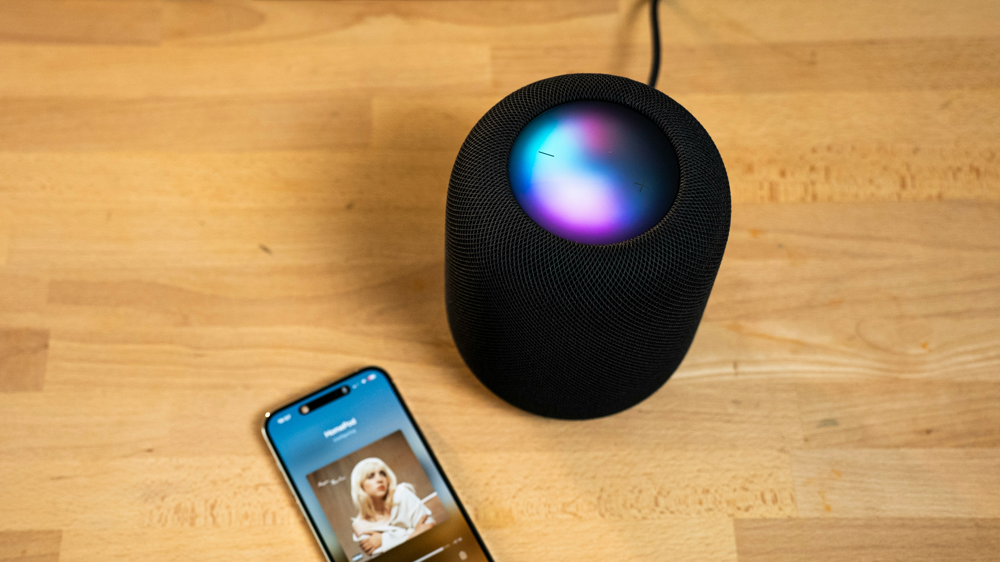

Consumer low power consumption
Edge intelligence applications
From wearable devices to smart home appliances, ANIX provides high-efficiency edge AI inference capabilities for the new generation of smart terminals, enabling a truly instant smart experience without sacrificing battery life.
Wearable devices and AR/VR smart terminals
Smart watches and glasses are extremely sensitive to power consumption, and many AI functions (such as gesture recognition and voice interaction) require long-term operation.
ANIX uses extremely low power edge inference to enable wearable devices to maintain lightweight and long battery life while maintaining excellent real-time perception capabilities.
Smart cameras and visual perception equipment
Smart monitoring requires 24-hour continuous operation, and high-power consumption platforms will significantly increase energy costs and deployment difficulty.
ANIX can directly perform edge inference on the camera side to achieve real-time object and event analysis, greatly improving response speed while reducing power consumption.

Smart speakers and always-on-call equipment
Smart speakers and home appliances are moving towards "Always-on" design and need to respond to voice awakening and environmental changes at any time.
ANIX's high-performance architecture can reduce standby energy consumption, ensure that the device switches seamlessly between interactive states, and greatly optimize the real-time interactive experience.
Low-power AI core for next-generation smart terminals
The core of competition in consumer electronics lies in the balance between battery life and experience. ANIX optimizes computing efficiency from the architectural level to achieve stable operation under Limited energy and provides energy-efficient transformation solutions for smart terminals.
Extend and explore more possibilities of ANIX
Expand from consumer scenarios to industrial fields, or gain an in-depth understanding of core architecture design.